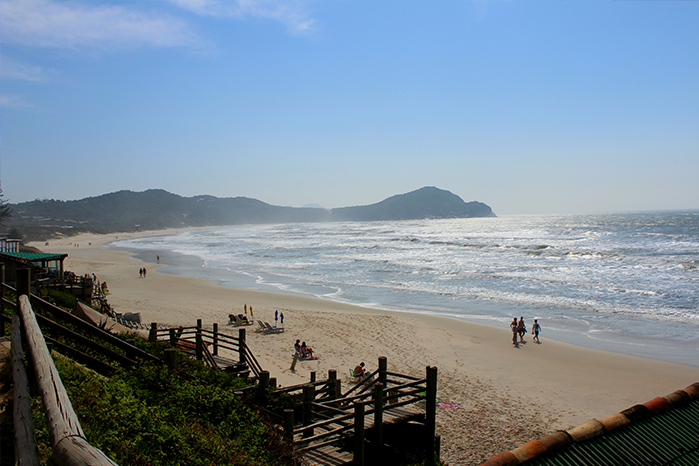

Conheça essa maravilha!
A praia do Rosa tem um estilo todo particular, que se originou com a vila de pescadores e foi tomando forma a partir da década de 70, quando os surfistas descobriram a praia.
É um local com uma vibe bem positiva, você vê bastante surfistas, hippies, estrangeiros e gente bonita. E o melhor, a praia ainda não foi descoberta por ambulantes, vendedores de barracas ou ônibus de turismo, o que deixa o clima da praia bem mais agradável e calmo. Quem frequenta esse lugar uma vez, provavelmente vai querer ir sempre.
A Praia do Rosa é cheia de hotéis e pousadas, desde mais simples até as mais luxuosas, a maioria no estilo rústico ou rústico chique. Se você quer um local com vista para o mar, dê preferência para os que ficam na encosta virada para praia, em frente ao Lago do Meio (um lago de água salgada). São mais caros mas facilitam na hora de ir para a praia, já que não precisa pegar o carro, sem contar que ficam perto do centrinho. Se você quiser algo mais em conta, tem várias opções, a praia do Rosa é cheia de pousadas legais que preserva o contato com a natureza! Só tome cuidado se não fica muito longe da praia.